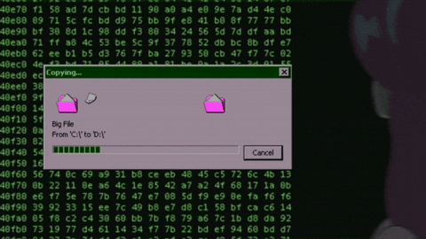
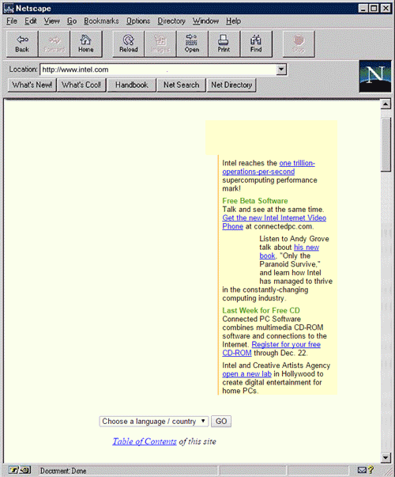

HTTP: The Humble Beginning
Think of HTTP in its earliest form as a simple courier with one job: “Go fetch this document.”
- Only supported one method: GET
- No headers, no status codes — just raw HTML
- Connection closed immediately after each request
HTTP 1.0 – Growing Up
By 1996, HTTP grew a bit smarter and more useful:
- Introduced headers, status codes, and new methods like POST and HEAD
- Every request required a brand-new TCP connection (which made things slow)
HTTP 1.1 – The Workhorse
Released in 1997, this version dominated the web for decades. Key improvements included:- Persistent connections (no more reconnecting for every file)
- Pipelining — send multiple requests at once
- Chunked transfer encoding for streaming data
- Enhanced caching mechanisms
- Required the Host header, enabling virtual hosting
Despite its upgrades, HTTP 1.1 still carried delays from older structures, setting the stage for HTTP/2 and beyond.
Quick Comparison
| Version | Year | Key Features | Limitations |
|---|---|---|---|
| 0.9 | 1991 | GET only; raw HTML | Closed after each request |
| 1.0 | 1996 | Headers, status codes, POST/HEAD | New TCP connection for every request |
| 1.1 | 1997 | Persistent connections, pipelining, caching | Inherited delays from older designs |